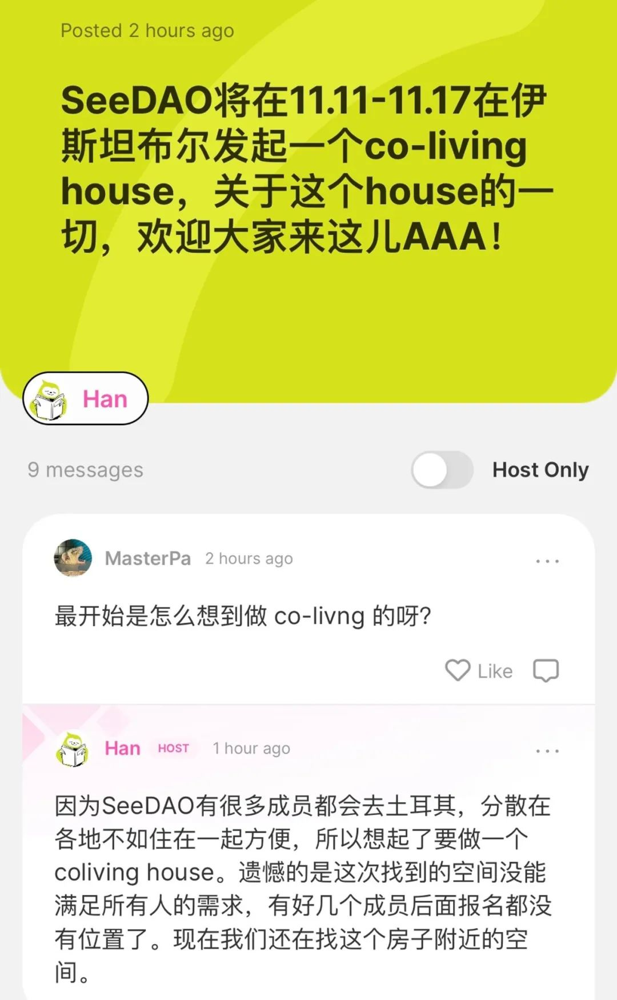
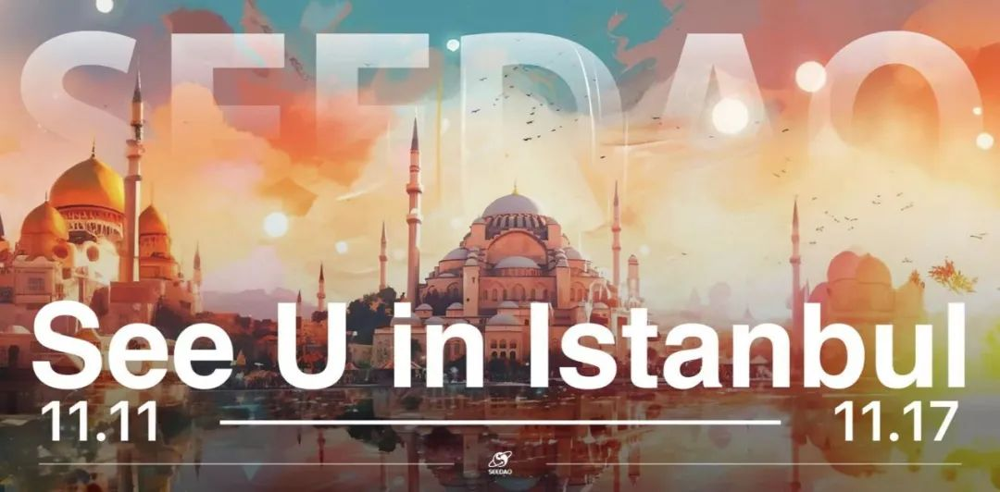

See U in Real Life, See U in Istanbul !在伊斯坦布尔的黄昏里， 东方的太阳轻轻沉睡， 猫儿穿梭石板铺就的大街小巷， 掠过屋顶，拥抱着蓝色的清晨。一周前我们开放了 Devconnect 期间的共居申请，收到了许多小伙伴的积极报名。由于房间数量有限，我们的co-living招募提前结束。我们期待与13位小伙伴在浪漫的星月之国·土耳其开展为期一周的共居之旅。随着Co-living成员的确认，我们也展开了关于在 DevConnect 期间客厅沙龙活动的主题探讨。目前我们已经策划了2场客厅沙龙分享活动，也欢迎大家参与AAAny的AMA，聊聊你想在SeeDAO Co-living House知道的一切！AAAny👉https://aaany.app/aaa/locw9idka来自AAAnySee U in Istanbul客厅沙龙介绍
海报 by 设计师 Marcus
01 / 伊斯兰文化的初探
An Introduction to Islamic Culture 伊斯兰文化的初探
当地时间：11 月 12 日（周日）19:00-22:00
分享内容：
伊斯兰文化的形成
奥斯曼帝国近代史
调停者土耳其
伊斯坦布尔本地攻略
报名链接👉 https://lu.ma/zv1i3sjb
02 / 数字游民生活指南漫谈
A Rambling Guide to the Digital Nomad Lifestyle 数字游民生活指南漫谈